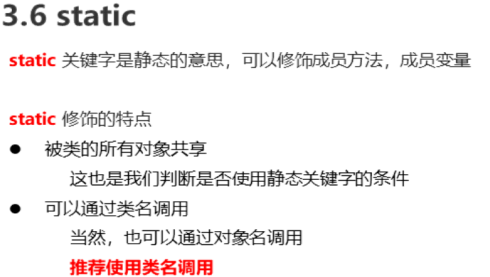
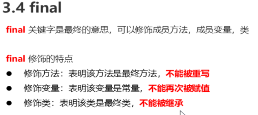

java的三大特性：
1.封装：将对象的属性私有化，隐藏具体的实现细节，给用户提供方法，用户通过对象方法对对象进行操作，
不必了解具体如何实现。
2.继承：一个类通过继承另一个类来实现另一个类中方法的使用
，被继承的类称为父类，父类是子类通用属性和方法的抽取。
例如：Cat，Dog类可以抽取一个Animal类Animal类可以包含name，age属性还有eat和work方法。
Cat，Dog通过重写eat和work来实现具体方法的细节。
优点：提高了代码的复用性（不会减少代码的运行效率）。
缺点：增加了类之间的耦合性。
this：代表调用成员方法的这个对象，类中成员变量。
super：代表所继承的父类的具体某个属性或者方法。
3.多态：同一对象在不同时刻表现的不同状态
static：
静态方法只能被继承不能被重写；
静态的成员方法只能访问静态的成员方法与成员变量，不能访问非静态成员方法及变量。
非静态的成员方法可以访问非静态的成员方法及变量也可以访问静态的成员方法及变量。

final：
被final修饰的类不能有子类，被final修饰的方法不能被重写，被final修饰的变量只能一次赋值。

byte –> short, char –> int –> long –> float –> double(从小到大)
在子类被创建时在堆内存为类分配内存空间存储成员变量，会为父类的变量同样分配空间，当子类通过super.age调用父类成员变量的时候，就会先通过子类对象栈内存储的地址找到为子类开辟的空间进而找到父类成员变量。


多态：
我们可以说猫是猫，也可以说猫是动物，猫在不同时刻表现出不同的状态就是多态。
1.1前提 ：
继承，重写，父类的引用指向子类对象
1.2多态访问的特点：
*成员变量：编译看左边，运行看左边。 *成员方法：编译看左边，运行看右边。
优点（多态提高了程序的拓展性） 缺点（不能访问具体子类特有功能）
1.3
什么时候使用多态：
一般把父类作为方法的返回值或者参数 父类作为方法的参数可以传递子类的对象
向上转型：Animal a = new Cat（）； 向下转型：Cat c = （Cat）a ；
判断a是否由猫类创建：
boolean b = a instanceof Cat；
2.抽象类：
2.1抽象方法
抽象方法必须在抽象类中；抽象方法没有方法体；抽象类中可以以没有抽象方法；
抽象类的子类要不重写抽象方法要不本身就是一个抽象类。
抽象类不能直接创建对象
（有构造方法不能直接创建对象使用，而是留给子类初始化使用）
抽象方法：
public abstract 返回值类型 方法名（参数列表）；
3.接口
公共的行为规范，接口是个抽象的内容(抽象类可以不重写接口里的方法)
定义格式：
public interface 接口名{
}
接口的使用：创建类实现接口并实现接口方法
接口成员特点：变量：静态的被final修饰的常量
常量的定义：定义变量的名字一般使用大写字母
**默认方法 只能在接口里面 可以有方法体(主要用来升级接口)
格式：
default 返回值类型 方法名（参数列表）{
}
静态方法
私有方法